Sample site design
Brookland Park
established 1924
519 Melrose Ct, Iowa City, IA 52246
This 2.4 acre site has has an intermittent rain-fed stream running through it. The stream is at the middle of a small valley microclimate, with slopes on either side. North of the stream is a mowed grass flat area and a more pronounced small south-facing hill that recieves sunlight. Near the top of this incline is a gazebo with picnic tables, a water spigot, a permanent grill and a number of large embedded rocks on the hillside. Around the gazebo and jungle jim are chinese magnolia and hemlock trees. A small brick-layed clearing set into the hill lies across the path from the gazebo with 2-ft walls holding in the soil around it and a free book library within. East from the gazebo, a gentle decline leads to a jungle-jim area with wood chipped ground and next to that a swing-set and a bench. East of that, sits a bench underneath a magnificent ancient elm. Reeds, cattails, and grasses all around the stream provide good habitat for goldfinch, sparrows, and ducks. There is a beautiful willow on the West end, near a gravel bridge, seen from the park entrance. Trees surround the park: Norway Maple, ash, mulberry, buckthorn and honeysuckle abound. Rabbits, squirrels, and sparrows use the vegetation for protection.
The site is in climactic zone 5b. According to websoilsurvey.gov the soil is 40% Fayette silt loam, till plain, 9 to 14 percent slopes, 30% Downs silt loam, till plain, 2 to 5 percent slopes and 30% Colo-Ely complex, 0 to 5 percent slopes

 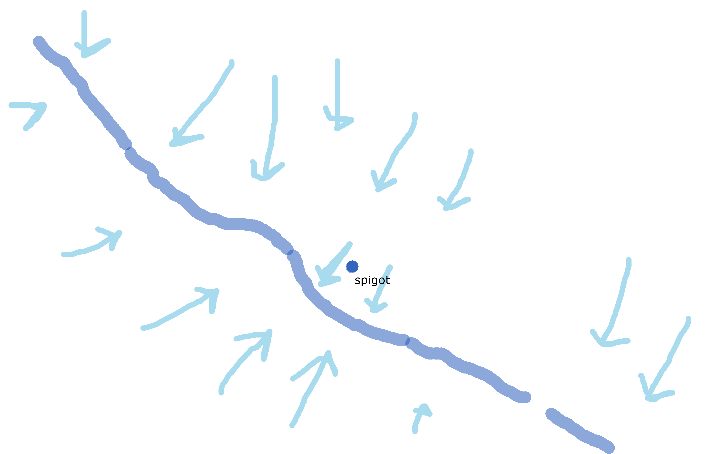
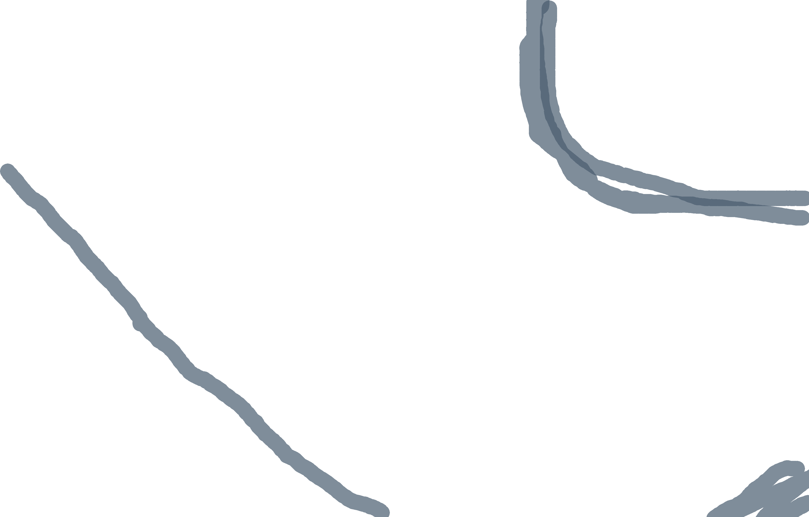
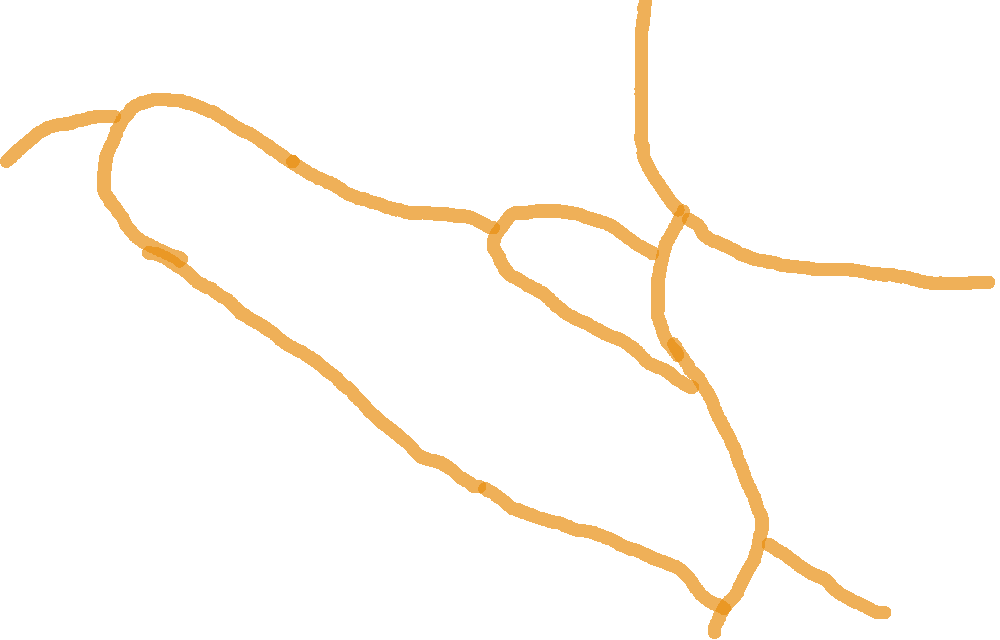
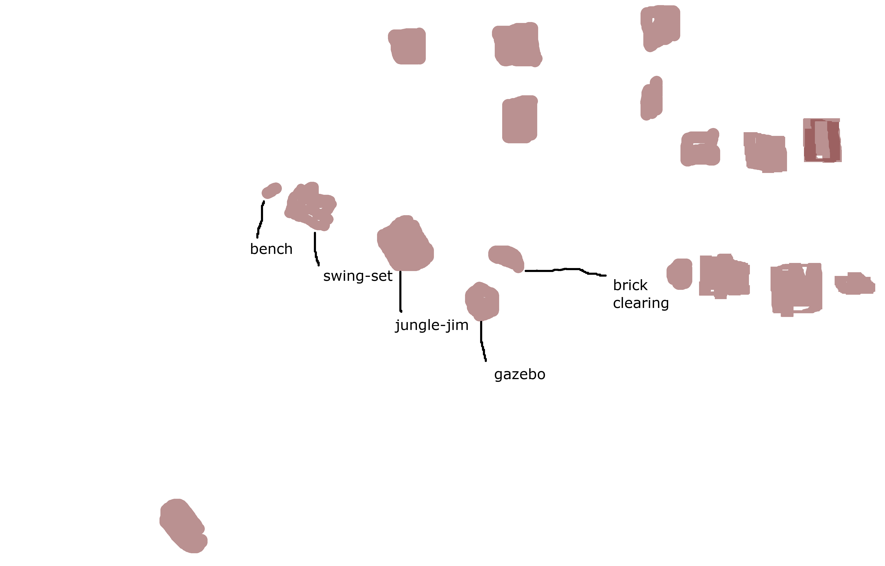
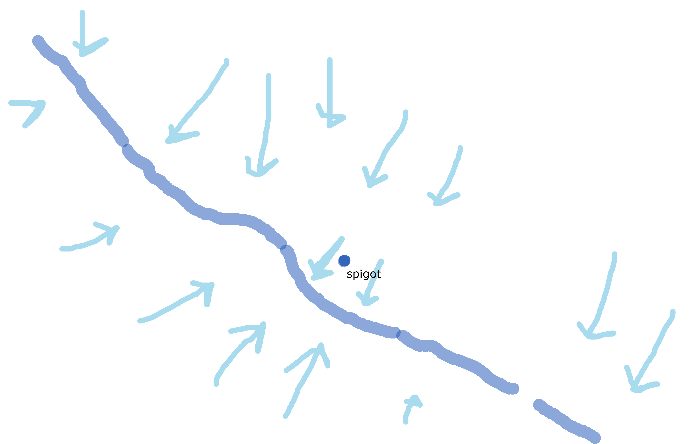
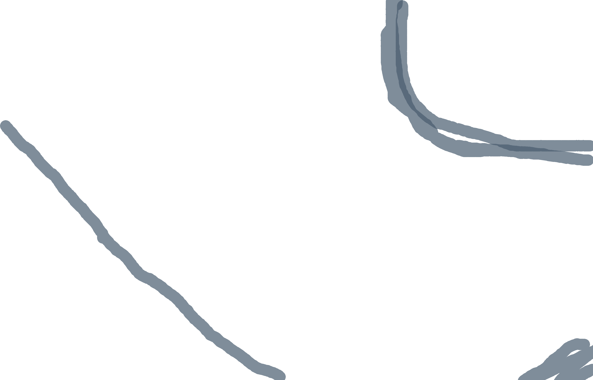
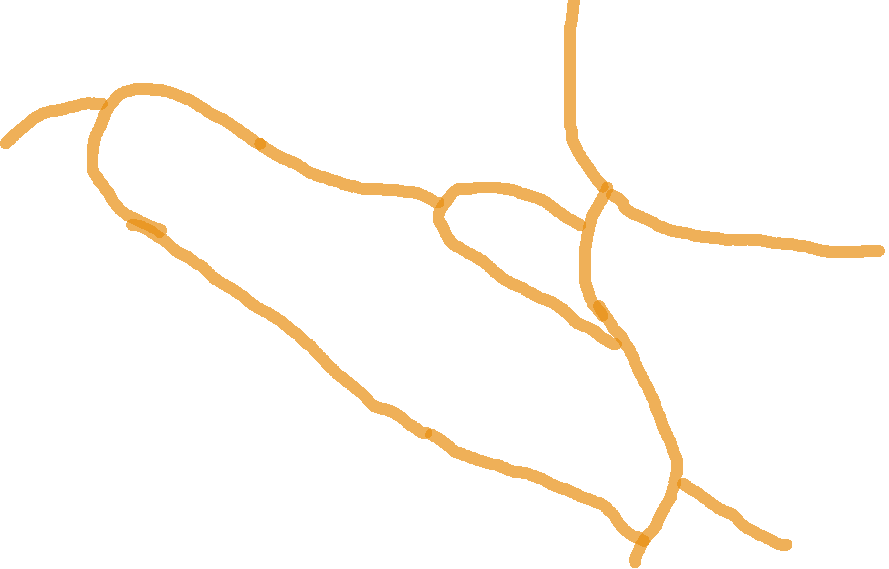
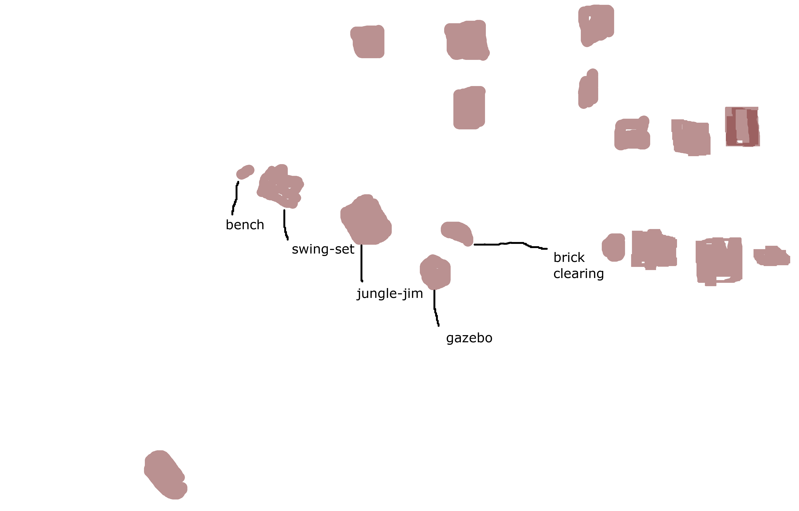
Toggle Layers
Uses & Services
Human Uses
Humans interact with the park in a number of ways. Most foot traffic is folks walking to and from the nearby university hospital. Classes of children from the nearby preschool come to play on the jungle jim, people of all ages walk the gravel loop to get a refreshing respite in nature, others use the jungle jim to exercise, and still more come to lounge in the grass or picnic with the grill at the gazebo. It is a site where people occasionally have get togethers, and where the unhoused can relax in summer heat.
Wildlife Uses
A number of birds find shelter and food in the wooded areas to the south and west of the park. Cardinals, sparrows, goldfinch, and other small birds use the vegetation for shelter, and eat the buckthorn, honeysuckle and mulberry fruit. Ducks spend time in the stream when it is high. The tall norway spruce could be used as signal trees by hawks and crows. Squirrels and rabbits are frequent visitors, the rabbits finding easy protection in the shrubs. Though I have not seen them, I suspect fox and deer and muskrat wander through occasionally.
Services
Provides aesthetic beauty! cleans air, water. Stabilizes microclimate, provides food, shelter, leisure activities for all life. Aesthetic Beauty baby!
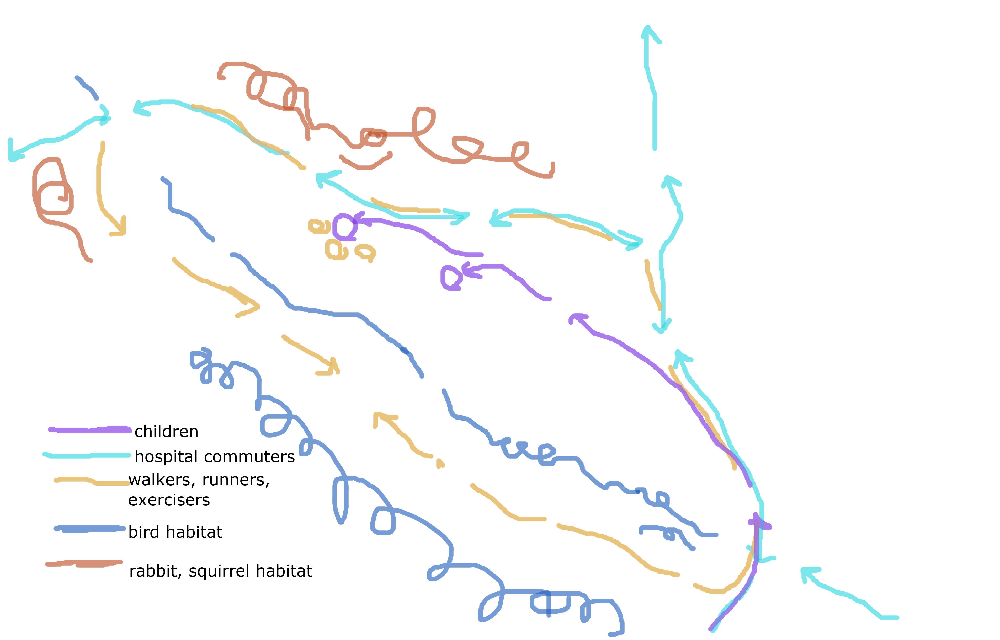
Design Plan
Main Design
Before getting into specifics, I'm trying to establish a series of zones such that all participants in the environment will be benefitted by the changes. Ideally this will be a system where not too much labor will have to be expended to sustain it once it is established. It seeks not to make huge alterations to the land, but change the way it produces. First, I would like to establish a windbreak on the eastern edge, this will provide additional bird, small mammal habitat and give the park a sense of seclusion from the road. Then, along the path going north-south, I would like to replace the grass field with native flowers and edible herbs that benefit from full sun and very moist soil. Just past them up the hill near the gazebo I would like to grow and establish more fruit trees--apple and pair. Replacing some of the honeysuckle in the understory with more productive berry plants would be costly but ideal. I would keep a lawny area with lots of clover and grasses near the jungle jim and bench to provide a lounging and play area. Behind the bench and under the elm, next to the willow, I would like to build a more secluded keyhole garden with another bench. Across the stream, where it is drier, I would like to plant primarily native grasses and good pollinator plants. Additionally, I propose building a wood-chipped path through the new herbaceous field that leads both to the gazebo, the spigot, and the playground, and provides a framing view for the willow at the end of the park.
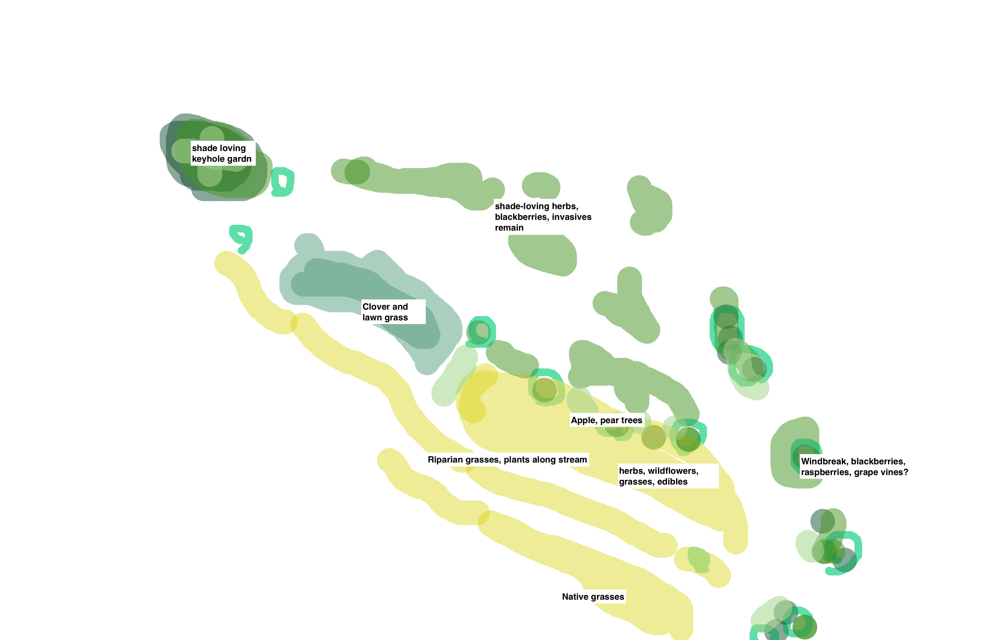
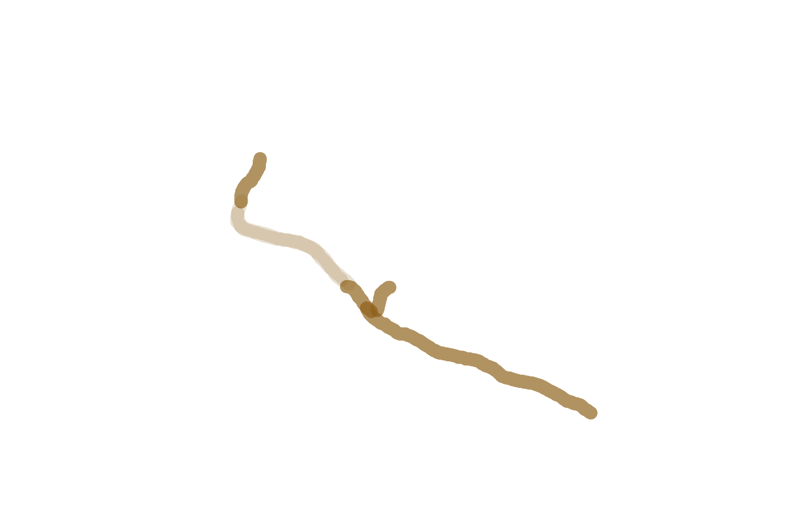